A disidrose, também conhecida como eczema disidrótico, é uma condição dermatológica caracterizada pelo surgimento de pequenas vesículas cheias de líquido nas palmas das mãos, laterais dos dedos e, ocasionalmente, nas solas dos pés. Essas lesões podem causar coceira intensa, dor e, após a resolução, descamação da pele. É uma forma de eczema das palmas e plantas onde, devido à espessura da epiderme, ocorre acúmulo de líquido formando vesículas visíveis ou bolhas. Quando as bolhas são muito grandes usamos o termo Pompholyx. Não há conexão com a atividade das glândulas sudoríparas.
Causas e Fatores Desencadeantes
A etiologia da disidrose não é completamente compreendida, mas acredita-se que seja multifatorial. Fatores associados incluem:
Estresse: Situações de estresse físico ou emocional podem precipitar ou agravar as crises.
Alergias: Histórico de dermatite atópica ou de contato pode aumentar a predisposição.
Exposição a Metais: Contato com níquel ou cobalto, presentes em objetos ou alimentos, pode desencadear sintomas em indivíduos sensíveis.
Hiperidrose: Suor excessivo nas mãos e pés está frequentemente associado à disidrose.
Fatores Ambientais: Climas quentes e úmidos podem favorecer o aparecimento das lesões.
Embora anteriormente se acreditasse que a disidrose estivesse diretamente relacionada a disfunções das glândulas sudoríparas, estudos mais recentes indicam que essa correlação não é primária.
Uso de drogas como a neomicina e a penicilina.
Infecções fúngicas dos pés que originariam as dermatofítides.
Manifestações clínicas
As lesões são basicamente vesiculosas. Iniciam-se pelas faces laterais dos dedos para depois se expandir para as palmas e plantas. Nunca no dorso. São vesículas semelhantes ao sagu, situadas profundamente e pruriginosas. A resolução com descamação ocorre em 2 ou 3 semanas. Ocorre recidiva com freqüência. A disidrose facilmente se infecta. Em 80% dos casos somente as mãos estão envolvidas de forma isolada. Uma área circunscrita e assimétrica de vesiculação e escamas na palma ou sola sugere uma dermatofitose. Caso o processo atinja a pele dorsal das mãos ou dos pés, deve-se pensar em dermatite de contato. A disidrose está fortemente associada ao herpes zoster. Pacientes tratados para disidrose devem ser alertados sobre esse risco.
Diagnóstico
O diagnóstico é clínico, baseado na avaliação das lesões cutâneas e no histórico do paciente. Em alguns casos, podem ser realizados testes adicionais para excluir outras condições dermatológicas ou identificar possíveis alérgenos desencadeantes.
No diagnóstico diferencial de lesões eczematosas persistentes nas palmas das mãos e plantas dos pés, especialmente quando o tratamento com corticosteroides tópicos é ineficaz deve-se considerar a hipótese de micose fungoide.
Tratamento
O manejo da disidrose visa controlar os sintomas e prevenir recorrências. As abordagens incluem:
Cuidados com a Pele: Manter a pele hidratada com o uso de emolientes adequados.
Medicações Tópicas: Aplicação de corticosteroides para reduzir a inflamação e a coceira.
Antihistamínicos: Uso de antihistamínicos orais para aliviar a coceira.
Fototerapia: Em casos persistentes, a terapia com luz ultravioleta pode ser considerada.
Evitar contato com substâncias irritantes ou alérgenos conhecidos.
Em situações mais graves ou refratárias, pode ser necessário o uso de imunossupressores ou outros tratamentos sistêmicos, sempre sob supervisão médica. Nos casos mais graves, corticóides sistêmicos.
Prevenção
Medidas preventivas incluem evitar o contato com substâncias irritantes, como detergentes e produtos de limpeza, utilizar luvas de proteção quando necessário, controlar o estresse e manter a pele adequadamente hidratada. Além disso, é aconselhável identificar e evitar possíveis alérgenos alimentares ou ambientais que possam desencadear as crises. A disidrose é uma condição crônica com tendência a recorrências. O acompanhamento regular com um dermatologista é fundamental para o manejo eficaz da doença e para a adaptação do tratamento conforme a evolução do quadro clínico.
REFERÊNCIAS BIBLIOGRÁFICAS
1. Genetic Disorders with Dyshidrosis: Ectodermal Dysplasia, Incontinentia Pigmenti, Fabry Disease, and Congenital Insensitivity to Pain with Anhidrosis. Wataya-Kaneda M. Curr Probl Dermatol. 2016;51:42-9.
2. Dyshidrosis is a risk factor for herpes zoster. Hsu CY, Wang YC, Kao CH. J Eur Acad Dermatol Venereol. 2015 Nov;29(11):2177-83.
3. Dyshidrosis: epidemiology, clinical characteristics, and therapy. Lofgren SM, Warshaw EM. Dermatitis. 2006 Dec;17(4):165-81.
4. Acute and recurrent vesicular hand dermatitis not pompholyx or dyshidrosis. Storrs FJ. Arch Dermatol. 2007 Dec;143(12):1578-80.
5. Mycosis Fungoides Palmaris et Plantaris Mimicking "Dyshidrotic Eczema": A Case Report. Burke O, Beer J, Elman SA. J Drugs Dermatol. 2024 Jul 1;23(7):569-570.
Atlas de imagens 64

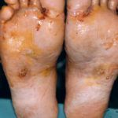


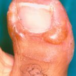

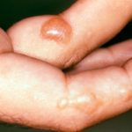

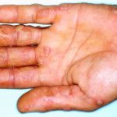

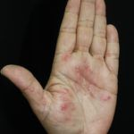

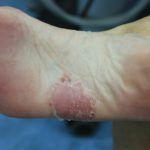


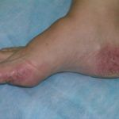


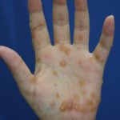

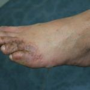

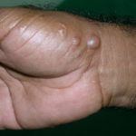

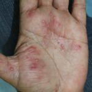

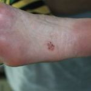

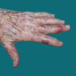

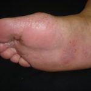

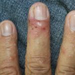

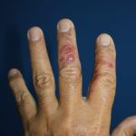

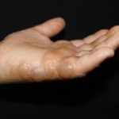

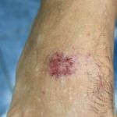

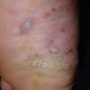

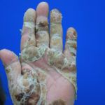

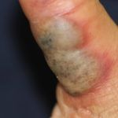

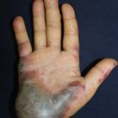

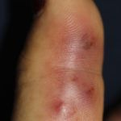

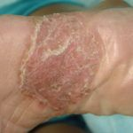

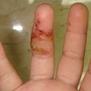

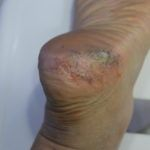

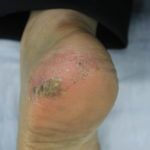

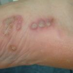

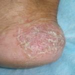

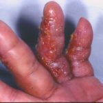


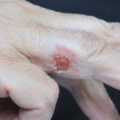

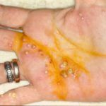

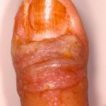

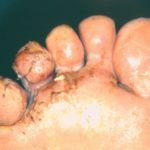

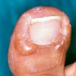

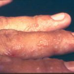

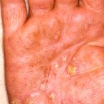

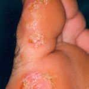


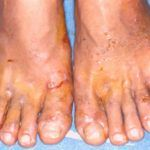

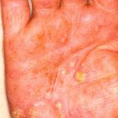

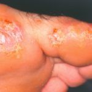

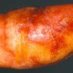

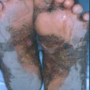


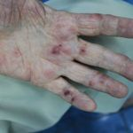


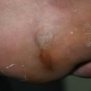

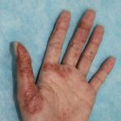


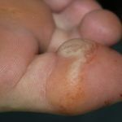


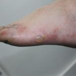

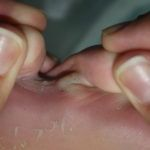

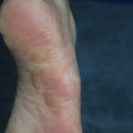


Na Skin Prime
Como podemos ajudar
Entre os recursos citados para Disidrose, estes estão disponíveis na clínica:
Tratamentos